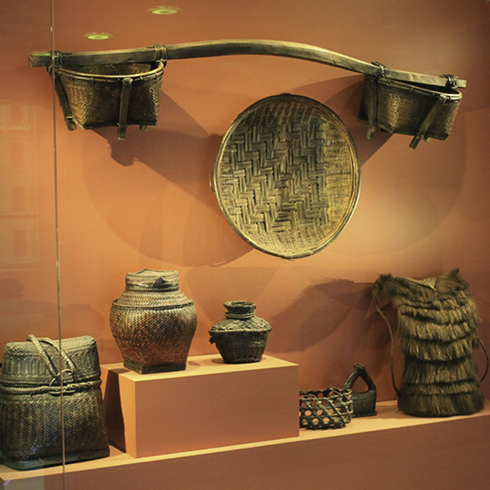
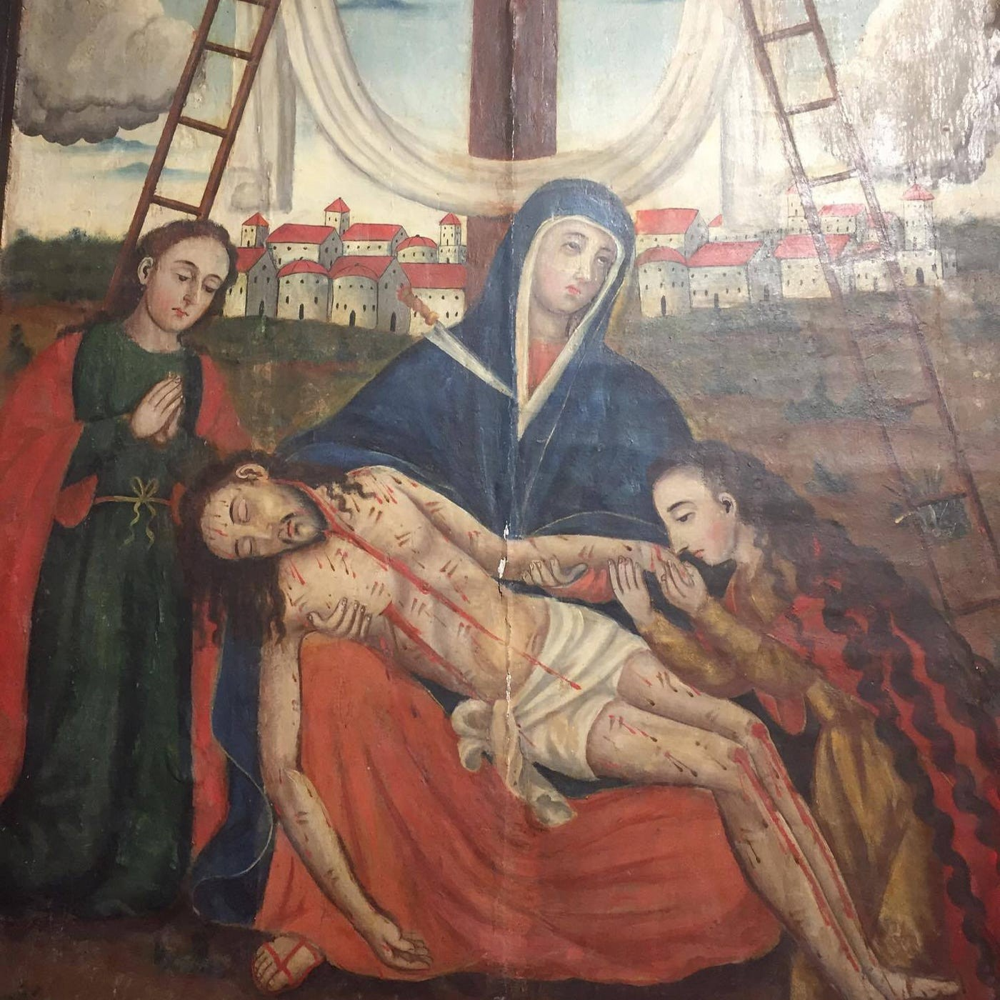
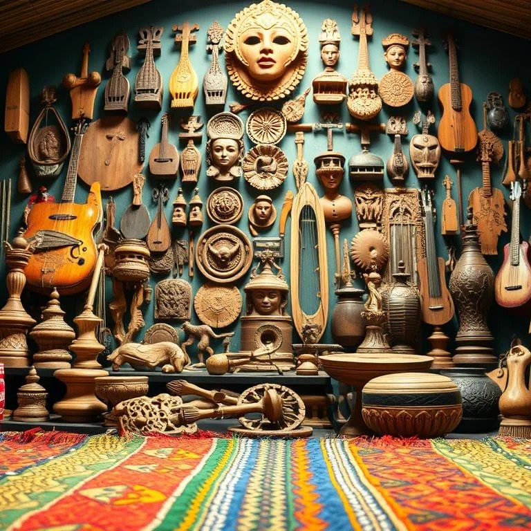

This section examines the "why" behind the art—how history and the environment have shaped these island traditions.
Focus: Cultural Influences, Materials, and Social Significance

Indigenous crafts in the Visayas and MIMAROPA regions often use local materials such as buri palm, bamboo, and shells. Their designs are inspired by the sea, marine life, and local spiritual beliefs. These artworks reflect the strong connection between coastal communities and their natural environment.

External influences shaped many cultural traditions in the Visayas. Spanish heritage is evident in the stone churches of Bohol and in the culinary traditions of Iloilo. Islamic influences can also be seen in the rhythmic patterns of some southern Visayan weaving traditions. These blended influences show how local culture adapted and evolved through contact with different civilizations.

Traditional techniques such as habi (weaving) and lilip (sewing) as important parts of Filipino craftsmanship. It also shows how modern education and business practices have helped transform these traditions into sustainable local industries. This development supports cultural preservation while providing livelihood opportunities for communities.